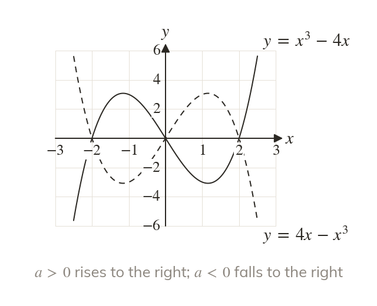
The ends follow a
When a cubic rises to the right and falls to the left. When it does the reverse.
A cubic's sketch is read straight from its factors: the sign of a gives the ends, and each root is a crossing, a touch or a flattening. The same reading sketches quartics next lesson and the transformed graphs at the end of the chapter.
Work down the page at your own pace. Write every answer in your book first, then click to check it.
Read each card, then follow the worked examples one step at a time.

When a cubic rises to the right and falls to the left. When it does the reverse.
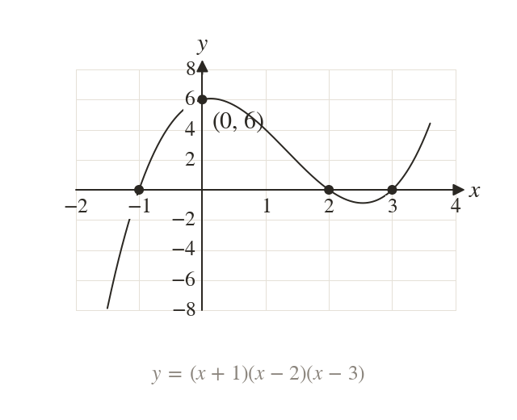
meets the x-axis where a bracket is zero, at and
At it is so it meets the y-axis at
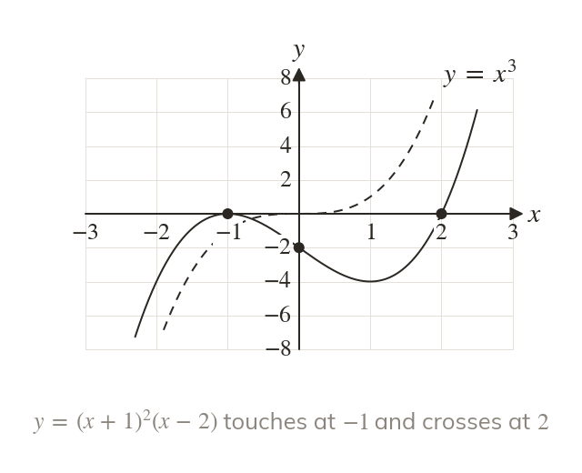
makes the graph touch the x-axis at and turn back. makes it flatten and cross there, as does at
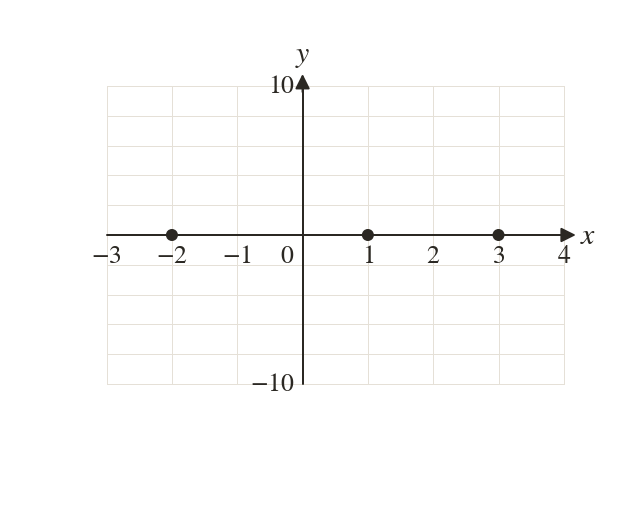
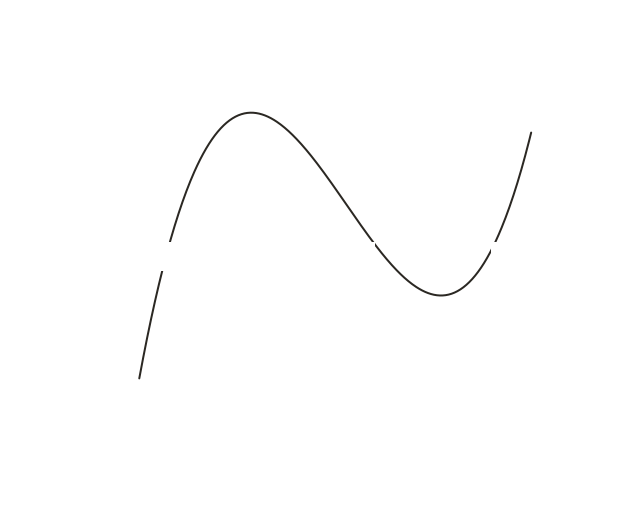
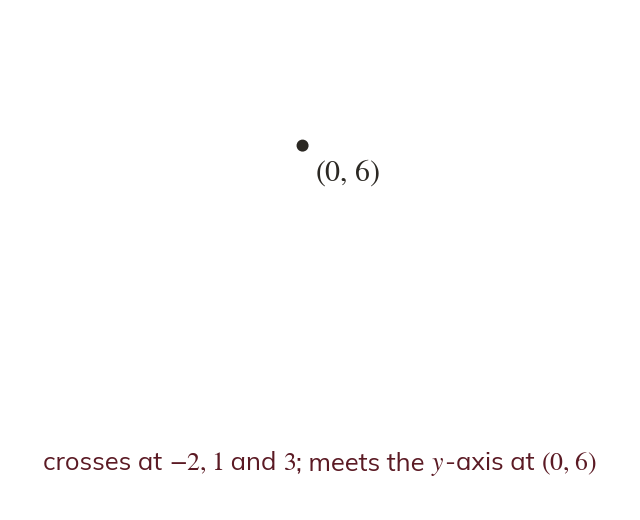
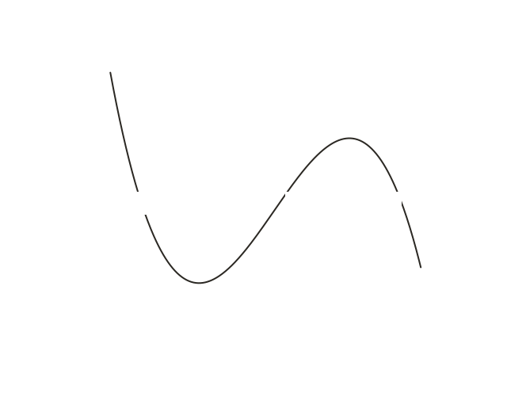
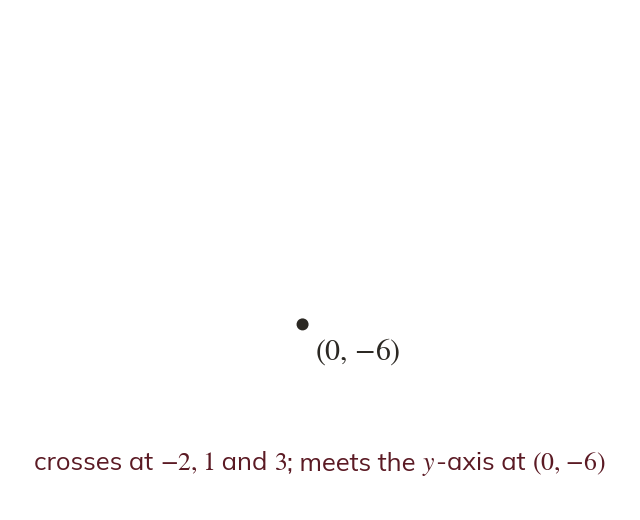
Pick an answer. If it's wrong, the feedback tells you which mistake it was.
Write the blanks in your book first, then tap each one to check.
Read each card, then follow the worked examples one step at a time.
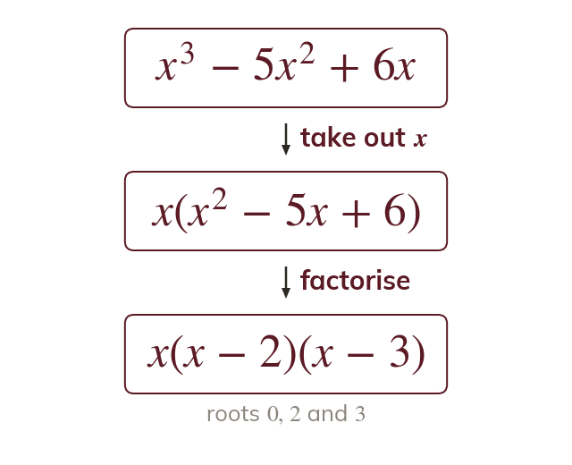
When every term has an take it out as a factor, then factorise what is left. The factor gives the root
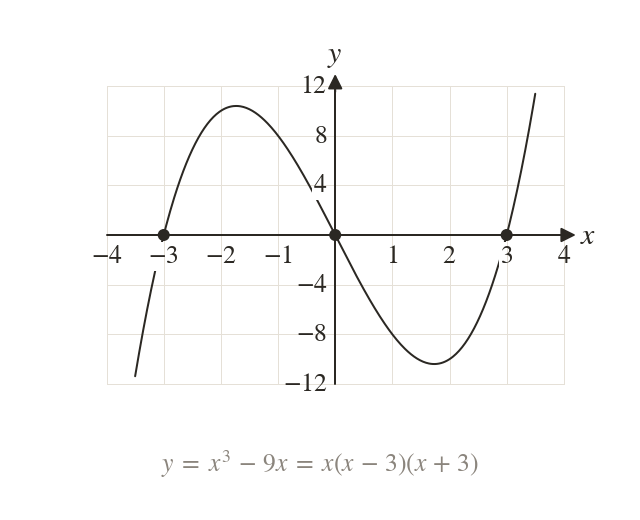
and is a difference of two squares. So with roots and
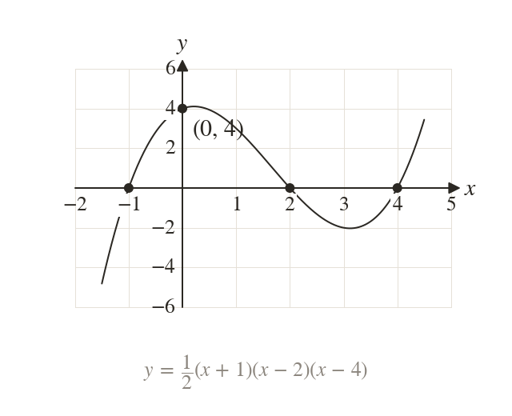
The roots give the factors, and one more point gives a. Through and the cubic is ; at so
Pick an answer. If it's wrong, the feedback tells you which mistake it was.
Write the blanks in your book first, then tap each one to check.
Finished? Next lesson: 4.2 Quartic Graphs.
For each skill, tap the one that is true for you today. Your Revise pages start with anything you mark Not yet.
Your ratings are saved on this device only.
Log in, then search for a code to practise that skill.